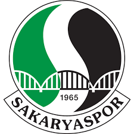
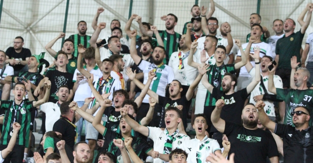
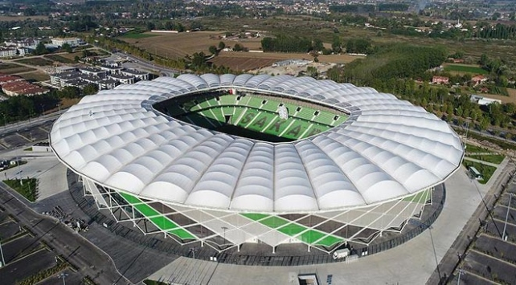
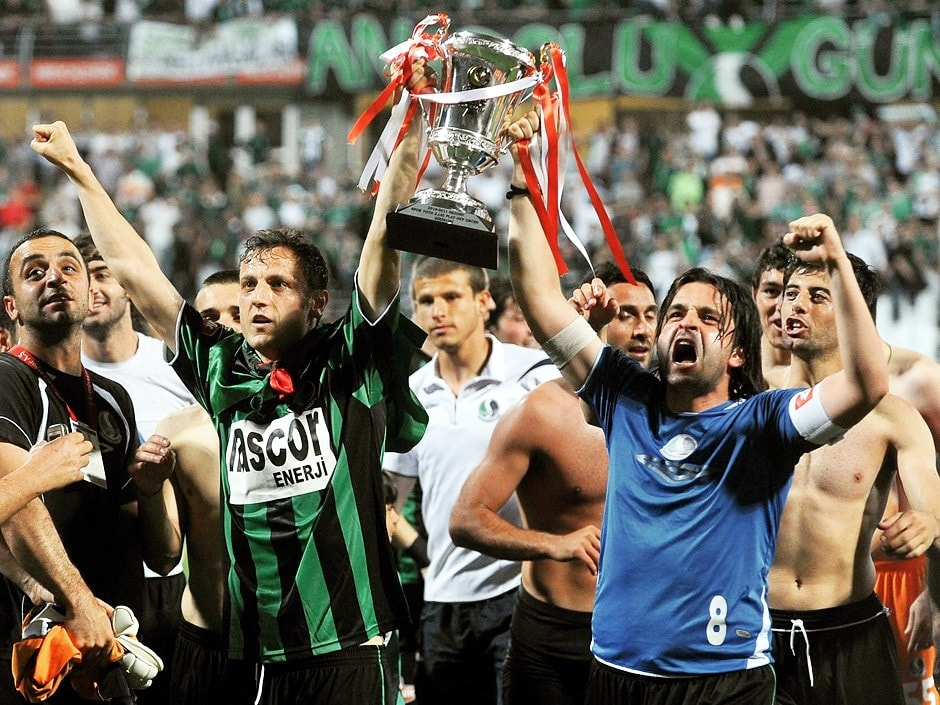

17 Haziran 1965 tarihinde il merkezi Adapazarı'nda; İdman Yurdu, Ada Gençlik, Gençler Birliği, Güneşspor kulüplerinin birleşmesi ile Sakarya ilini, aynı yıl kurulan Türkiye 2. Futbol Ligi'nde temsil etmek amacıyla kurulmuştur.
İlk amblemi "futbol topu üzerinde iki adet S harfleri ve 1965" dir. 1987 yılında dönemin kulüp başkanı Erkal Etçioğlu tarafından tasarımı yaptırılan ve hâlen kullanılan amblemi ise "Sakarya Nehri'nin S harfini andırarak kıvrılarak Sakarya Köprüsü'nün altından akması ve iki yakayı yeşil ve siyah renklerle boyaması" figürüdür.
Tatangalar, 1990 yılında Sakaryaspor Altyapı oyuncuları tarafından kurulan ve adını Kurtlarla Dans filminden alan taraftar grubu. Grubun liderliğini Keçi Yılmaz yapmaktadır. Tatangalar, şehrin en büyük sivil toplum örgütüdür.[9] Yaptıkları farklı pankartları ve sloganlarıyla nam salan Tatangalar yalnız tribün faktörleriyle değil sosyal yardım kampanyalarıyla da adından sıkça söz ettirmektedir. Sakaryaspor taraftar grubu Tatangalar'ın Göztepe taraftarıyla dostluğu vardır.
Sakaryaspor maçlarını Yeni Atatürk Stadında oynamaktadır. Stad Adapazarı'nda yer almaktadır ve çok amaçlıdır. Sakaryaspor'un iç sahadaki futbol maçlarına ev sahipliği yapmaktadır.
Sakaryaspor günümüze kadar birçok başarıya imza atıp Sakarya şehrini onurlandırmıştır. Yarım asırı geçen tarihi ile kentlilere büyük bir miras bırakmıştır.
Şampiyonluk (3) : 1980-1981, 1986-1987, 2003-2004. Play Off Şampiyonluk (2) : 1997-1998, 2005-2006. Şampiyonluk (1) : 2021-22. Play Off Şampiyonluk (1) : 2010-11. Play Off Final (3) : 2017-18, 2018-19, 2020-21. Play Off Çeyrek final (1) : 2019-20. Play Off Şampiyonluk (1) : 2016-17. Play Off Final (1) : 2014-15.
